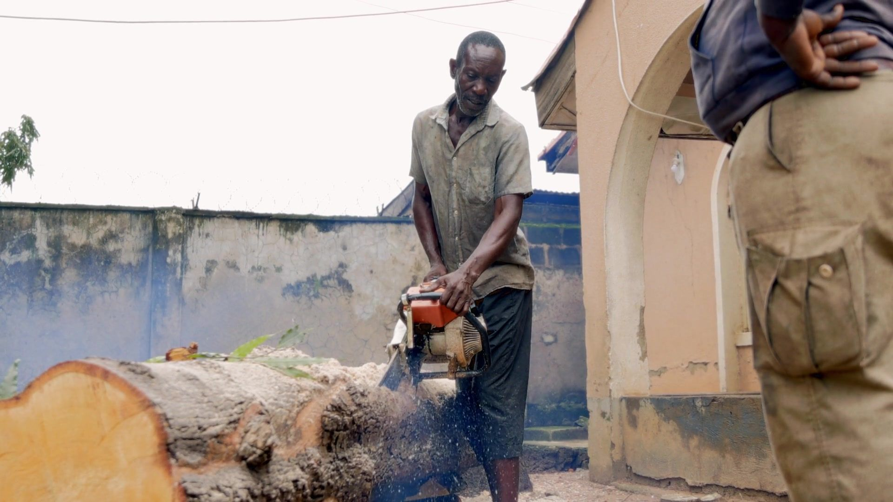
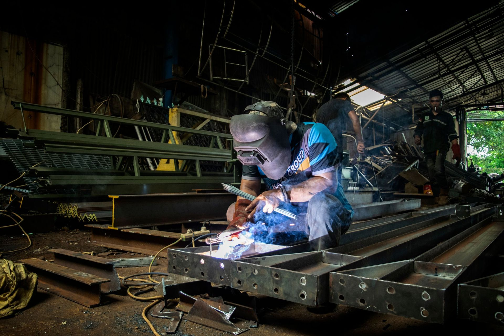
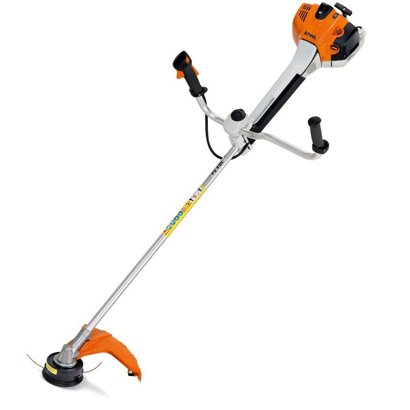
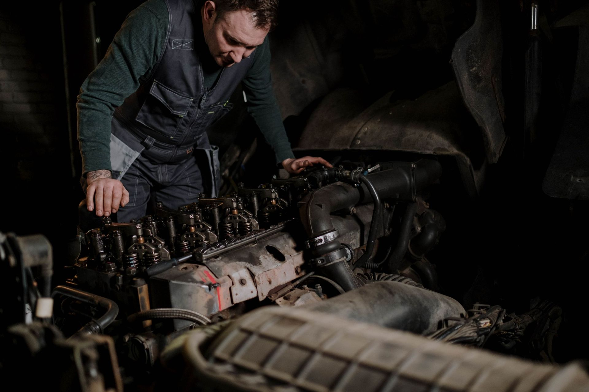
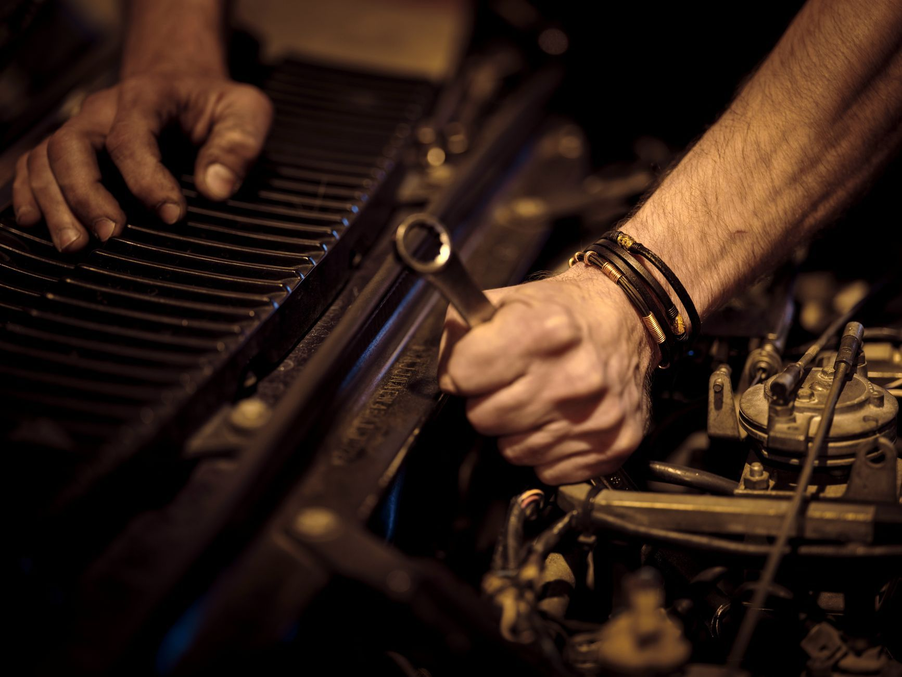

01
Forêt et exploitation
Abattage, tronçonnage, élagage. Les machines des longues journées de chantier et ce qui les garde affûtées.
Représentant exclusif STIHL en Côte d'Ivoire
Forêt, plantations, espaces verts, industrie : machines, pièces d'origine et atelier, depuis 1985 à Abidjan.
Par métier

01
Abattage, tronçonnage, élagage. Les machines des longues journées de chantier et ce qui les garde affûtées.
02
Hévéa, palmier, cacao : traitement, travail du sol, saignée et greffage.
03
Fauchage, débroussaillage, tonte et soufflage, toute l'année.

04
Transmission, hydraulique, air comprimé, levage, sécurité et construction métallique.
Marques distribuées


STIHL, représentant exclusif

Abattage et tronçonnage de gros bois.
Caractéristiques : fiche STIHL, relevée sur le catalogue.

Traitement des cultures et plantations.
Caractéristiques : fiche STIHL, relevée sur le catalogue.

Travail du sol, parcelles moyennes.
Caractéristiques : fiche STIHL, relevée sur le catalogue.

Sols lourds, grandes parcelles.
Caractéristiques : fiche STIHL, relevée sur le catalogue.

Herbes hautes, broussailles, talus.
Caractéristiques : fiche STIHL, relevée sur le catalogue.

Fauchage de grandes surfaces.
Caractéristiques : fiche STIHL, relevée sur le catalogue.

Pelouses de taille moyenne.
Caractéristiques : fiche STIHL, relevée sur le catalogue.

Feuilles, allées, cours.
Caractéristiques : fiche STIHL, relevée sur le catalogue.

Outils de jardin interchangeables.
Caractéristiques : fiche STIHL, relevée sur le catalogue.

Lavage de surfaces, matériel, véhicules.
Caractéristiques : fiche STIHL, relevée sur le catalogue.

Atelier et service après-vente
Suivi en direct
Suivi de démonstration. Essayez le dossier .
Envoyez ce message sur WhatsApp pour confirmer le dépôt. Pensez à joindre votre photo.

Proposition
SACRI Academy
Un programme en trois niveaux, de l'entretien courant au diagnostic. Le film de présentation est en ligne.
Le groupe
Fourniture industrielle, transmission, pneumatique et hydraulique, outils de coupe, construction métallique.
Nos gammes
 Agricole et forestierAtomiseurs, tarières, tronçonneuses
Agricole et forestierAtomiseurs, tarières, tronçonneuses Espaces vertsDébroussailleuses, souffleurs, tondeuses
Espaces vertsDébroussailleuses, souffleurs, tondeuses Lavage et nettoyageNettoyeurs, aspirateurs
Lavage et nettoyageNettoyeurs, aspirateurs LubrifiantsHuiles moteur, hydrauliques, graissesFlexibles et transmissionFlexibles, raccords, roulements
LubrifiantsHuiles moteur, hydrauliques, graissesFlexibles et transmissionFlexibles, raccords, roulements LevageSangles, câbles, palans
LevageSangles, câbles, palans OutillageServantes, caisses, clésSécurité et EPICasques, gants, chaussures
OutillageServantes, caisses, clésSécurité et EPICasques, gants, chaussures Fournitures industriellesCompresseurs, crics, presses
Fournitures industriellesCompresseurs, crics, presses Centrale d'achatTous matériels, sur demande
Centrale d'achatTous matériels, sur demandeQualité
« Notre vocation est de satisfaire de façon totale et durable les besoins de nos clients et parties intéressées. »Nabil AJAMI, Directeur Général Lire la politique qualité (PDF)
Contact
Votre message est prêt. Envoyez-le à l'équipe commerciale.